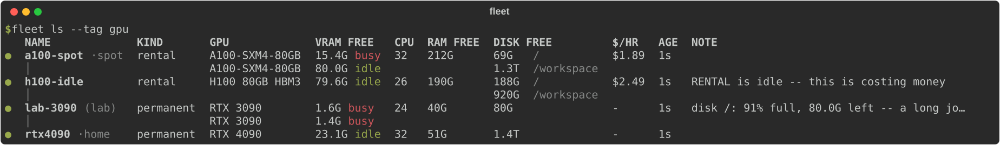
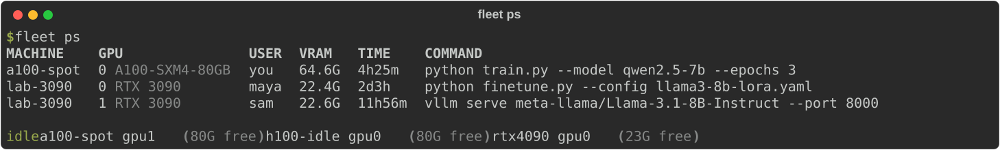

fleet
Give your coding agent every machine you have.
free GPUs
· running jobs · served models · software · data folders
over the SSH you already use · Claude Code, Codex, Gemini CLI, any MCP client

